Transportation Management System
Overview
Overview: An overview of the transportation management system to include inbound processes, outbound processes, and freight reconciliation.
Finance & Operations > Product information management > Products > Release products
Processes
There are inbound and outbound load transformation management loads capability in the system. Inbound would be anything on a purchase order. Outbound would be anything on a sales order or a transfer order in the system.
In order for the product to be used in transportation management, it has to be configured. This is done under the product information management module under the release product section. Any item that is enabled for TMS must be flagged under the Transportation tab. By checking yes, this states the item can be used in TMS functionality. If an item is not flag it will not be picked up by the system to be used.
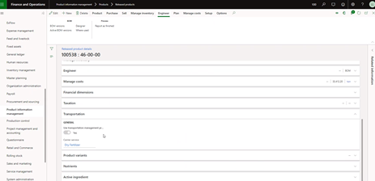
The user will also find a Carrier service field under the Transportation section. This has been added to help default the carrier service. In a typical out-of-the-box D365 service, a user must select the carrier service. If you think of a regular carrier service (such as: UPS Ground or FedEx) those are different carrier services which each would generate a different rate structure.
For a user to be able to select different rating profiles to get the right rate to calculate in the system, the rate is driven from the carrier service. The Levridge solution added the Carrier service field because in most situations the same type of item will ship together on one load. (e.g. fertilizer items would ship together, chemicals items would ship together). Therefore, having a default would be applicable and automatically pulls in a particular item on to a purchase order, transfer order, or sales order.
Inbound TMS Loads
Accounts Payable > Purchase Order > All purchase orders To create a new purchase order, click on New. A Create purchase order window will appear on the right-hand side of the screen.
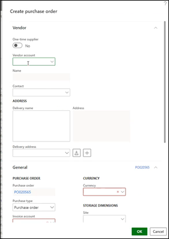
Rate Bases
Under the Rate master tab is where a user can create, edit, and delete rate bases.
Transportation Management > Setup > Rating > Rate master
When a user initiates a rating structure for a product, they must configure it in the rate master. The rate master holds all the different rates which can be set up either on a mileage basis, weight basis, or through a Bing engine. There are a variety of configurations that can be done. Each rate master has an attached rate base, which annotates from zip codes, city, or state. It can be set up as granular or high level as the user prefers. Some of the settings are also dictated by the transportation management rating metadata and under the metadata view, the user can indicate which field is mandatory. The metadata dictates the structure what is required when setting up your rating structure.
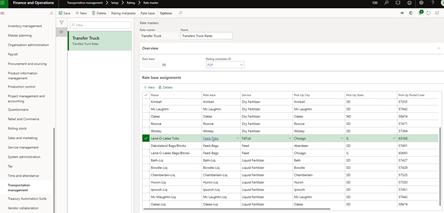
By opening an individual rate base, the user can view and search multiple Drop-off locations. You can have multiple different rate bases attached to each rate base assignment and located under the Details section under each rate base. The rate base can configure as many different systems as the user wants to and under the Details section is where the user configures their rate. (weight, mileage, per load type basis).
Break master field: This field dictates the different levels of freight that one could get. This indicates your break points from the different rates that you have in the system. The system can then pick that rate up based on the weight of your entire transportation load. The user must make sure all products need to have some sort of weight on it, especially weighing it by weight. That value is required to calculate the different break master rates to pick up. The rate base dictates your “to” zip codes (where the item(s) are going to). For ag, mostly going to see mileage and P2P (Point to Point) used the most.
Delivery Terms
With a newly created purchase, a user can pull the specific product item. Delivery terms are required in order for transportation management to calculate on an order. The carrier service automatically populates from the item record. The user needs to be mindful of the “Add transportation charges to order” field which is required to be set to calculate transportation management charges to an order. This toggle field is located under Transportation. This is a configuration at the beginning of the project and required for an item to calculate transportation management.
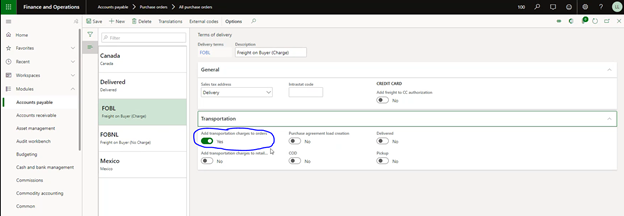
Shipping Carriers
When reviewing shipping carriers, there are three important setup items to be mindful of:
- Activate carrier rating field: This flag field needs to be toggled to yes in order for a load to be rated. If it is not activated, the order will not rate a load.
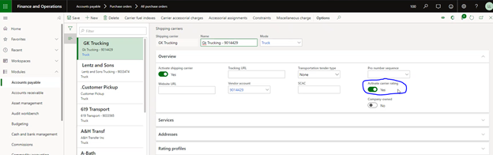
- Activate shipping carrier. This flag field needs to be toggled to yes in order to show the drop-down shipping carrier list. If it isn’t activated, the user will be unable to view shipping carriers from the drop-down shipping carrier.
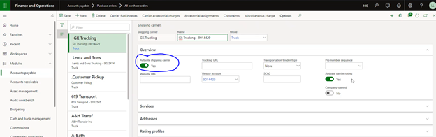
- Vendor Account: A vendor account is required to be attached to the order to generate a bill. Under the Services section, it is important to set up carrier services applicable to what they are licensed to haul. Under the Rating profile, here is where the Rate engine gets assigned (e.g. P2PContract). There are three types of rating engines most likely to be used: contract, weight, and mileage.
Without these setups, nothing would generate for that carrier on the purchase order.
On the purchase order, once the shipping carrier is added, the system automatically formats the Mode of delivery field. It is system generated.
The basic items required on a purchase order is the delivery terms, shipping carrier, and the carrier service. These three are required for inbound or outbound loads. All three of these are needed in order to create a load.
The next step in creating a load is to add it to a purchase order. Under Warehouse, click on Load planning workbench. A new screen will appear with the Purchase order lines showing the item is enabled for transportation management. If the flag had bene turned off, the user would see no record. A user can create as many loads as needed.
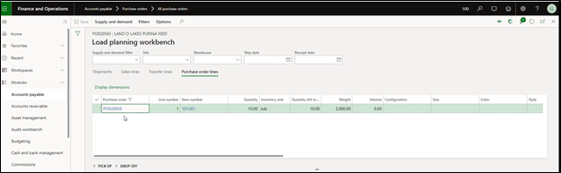
Under Supply and demand, the user can save the entire order to a new load by Adding the Entire order to new load. 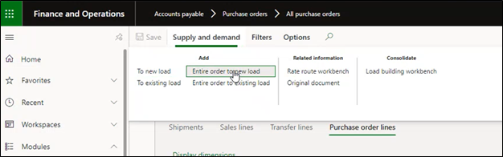
A Load template assignment will open in a new window on the right-hand side.
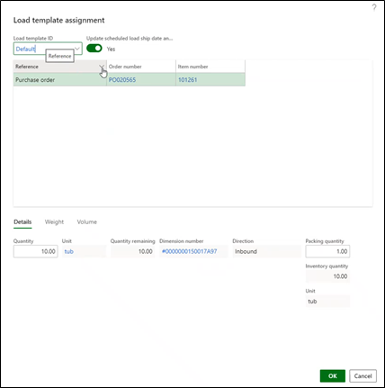
Load template IDs can be set up based on the size of the track that’s hauling the items. Users may want to specify different loads for different sizes of trucks. In the setup of the load template, the user would indicate the weight capacity.
After creating load, the system creates a new inbound load with an open status. The next action will happen through the receiving process so when the user is completing outbound load shipments, there are several different steps to process. For inbound, all of that happens automatically with receiving of the product. The only step the user needs to do is create the load. Click OK.
The next step is to confirm the Purchase Order. Under Purchase, click Confirm.
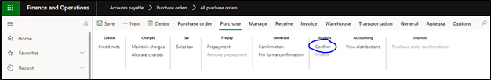
The last step would be to generate product receipt. This is located under Receive on the header.
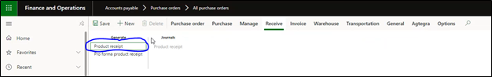
A new window will appear with an overview of the Posting product receipt. Click OK. After the product receipt is processed, the user can view their Freight bill details under the Transportation tab on the header. The user will be able to view the freight bill that was generated and attached to a vendor.
Outbound Process and Freight Reconciliation
There are two different outbound processes that can use transportation management, the sales order to a customer, or a transfer order to another branch.
Transfer Order
Note: The steps you take to create a transfer order would be very similar to creating a sales order, but some steps may occur in slightly different tabs for each one.
- Create New transfer order (+New)
- Input From warehouse
- Input To warehouse
Note: It is crucially important that both warehouses need to be part of your rating master that you are creating that load for (From city, state, zip & To city, state zip). The system will look for those two values when querying the rate. It will apply that rate to the transfer order freight bill when it goes and rates this load. 4. Add Transfer order line (+Add)
Note: the unit of measure will dictate what net weight value we need to have. This net weight should always be in pounds.
- Input Item number
- Input Transfer quantity
- Navigate to Transfer order header
Note: There are some critical steps in the header of the transfer order that must be completed for a rate to be generated on a transfer order.
- Input Delivery terms – these are defined by the client
Note: The add transportation charges to order flag needs to be set to yes for the particular delivery term you are going to use for those transportation type orders that need to have that freight on there. - Add Shipping carrier – you define what services are applicable to the specific Shipping carrier.
- Add Carrier service – each service has a different rate structure behind it and that is what pulls in the different rates that we need to apply to that rate bill.
Note: The only time this will be different is if you are integrating to the Kahler integration. If we are doing an Ag project that is integrated to Kahler, the minimum that needs to be defined in the transfer order is the delivery terms. When the product comes back in the integration from Kahler, the Shipping carrier and the Carrier service will be populated.
- Generate picking list
- Change Update value to All
- Click OK
- Create Transportation Management load, Ship Tab > Transportation Load Planning Workbench
- You should be able to view the transfer order line
- Go to Transfer lines tab
- Add entire order to new load
Note: The Load template ID will come in blank by default if you miss some settings in the transfer order.
- Click OK
Note: Once you have created the new load, the Load ID and status of the load will be auto assigned. The status of a brand-new load will be “open.”
-
Create shipment
- Release
- Release to warehouse
- Right side bar will launch – no changes need to be made in this screen
- Click OK
- Shipment will be updated to “1” in the load
- You have now created a transportation management shipment that goes with this load
- If you miss this step and the shipment field stays at zero, no freight bill will be created, and the load will not be shipped
-
Statues will be updated to Posted
- Close out of this load
- Update picking list
- Operations
- Picking list registration
- Update Pick quantity
Note: when you update the picking list quantity, your load quantity will remain the same. It does not automatically go back and update the load quantity. The load quantity and pick quantity need to stay in sync so that the freight bill is created for the correct quantity. There is not a direct connection between the transfer order and the load. - Updates > Update all
- Status of picking list will be updated to Complete
- Now your picking is complete and is ready to be closed
- Navigate back to your transportation load
- Ship load
- Ship > View > Load details
- Ship and receive > Confirm > Outbound shipment
- If done correctly, a blue bar stating, “The shipment for the load has been confirmed” will populate on the load screen.
- Ship and receive > Generate > Post ship transfer
Note: The only time you are going to see there are some parameters that need to be enabled to be able to post ship transfer. There is a transportation parameter that allows you to unconfirm the outbound shipment and when that flag is set to “yes” you will have the post ship transfer button available. If that flag is set to “no” and you do not allow someone to unconfirm that outbound shipment, the Confirm outbound shipment would be the only step required and it would automatically ship. - The post ship transfer button ships the product
- Navigate back to the transfer order
- Refresh the screen
- Status of transfer order will be updated to Shipped
-
Check to ensure freight bill was created
- Ship > View > Load details
- Transportation tab > Related information > Freight bill details
- If done correctly, a freight bill will populate
-
Navigate back to transfer order
- Receive tab
- Transfer order lines
- Charges
- There should be a charge on the transfer order line – this is based on a charge code that is setup in the configuration steps.
- Click OK
-
Click Receive
- Input Shipment voucher
- Click OK Note: The receiving process is where the voucher transaction happens and hits the ledger and sub-ledger, and you can view that navigating to Transfer Order Tab > View > Transfer order history. In the history, you can view the voucher transaction details.
-
View Charges Note: One other area that has been added to the Levridge ISV is the ability to see those charges. Once you have shipped that product and receive it in, if you go back to the transfer order line the freight costs are not shown because that freight is not charged on every order. You can review those charges in the Transfer order history.
- Transfer order history
- Select received transaction in the transfer order history
- Charges
- You will now be able to see for that load, you can see all the charges that were applied to it.
Manually Rate Load
There is the ability to rate a load. For example, let’s say the client has a particular product they want to charge freight to but they do not have a rate structure set up and did not want to use the carrier service with a rate profile behind it.
- Add product to transfer order
- Save
- Supply and demand tab > Add > Entire order to new load
- Click OK
- Load > Release > Release to warehouse
- Click OK
- Rating and routing tab
- Click Manual Rating
- Close out of Route rate details screen that populates
- It creates a Route for it automatically
- Route rate details
- Add new record
- Input Route as the Accessorial level
- Input Rate
- Input Shipment as the Accessorial assignment level
- Save
- Refresh
Note: Now when you do all the rest of the processes, pick, register, and confirm the outbound shipment, it will use the manual rate load instead of using the one used based on the rating structures that the carrier services would typically pick up.